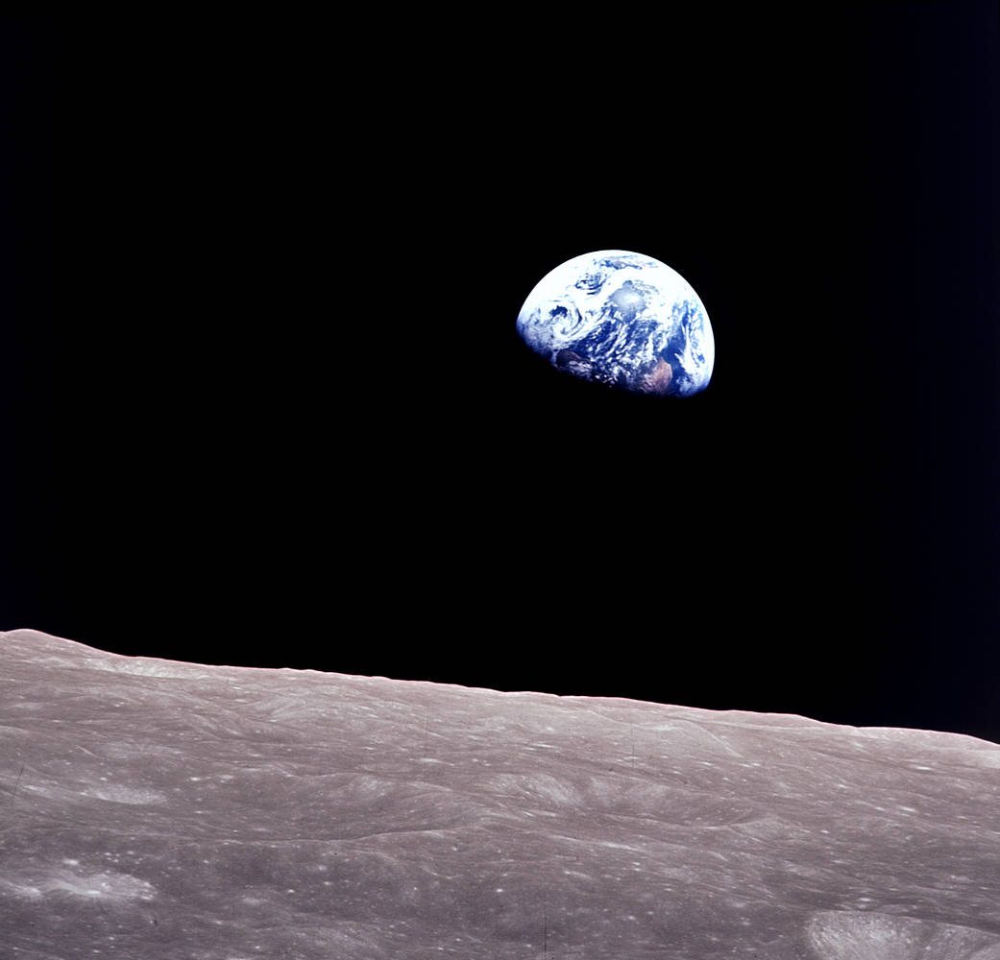

Dossier · Un cadrage, un contexte
Une image, deux histoires
Photographie réelle. La légende ci-dessous est créée par THOT uniquement pour l’exercice : ce n’est pas une rumeur ou une publication authentique.
Environ 3 à 5 minutes · indices facultatifs · sans score
Un cadrage peut orienter le regard. Affichez l’image entière, puis comparez ce que montrent les pixels avec ce qu’indique la provenance.
L’affirmation à examiner
Cette photo a été prise par un astronaute debout sur la Lune.
Légende créée pour cet exercice, et non tirée d’une publication réelle.
Examinez avant d’interpréter
Image entière. Avec les commandes, vous pourrez isoler une fenêtre d’affichage sans modifier le fichier.

L’image n’a pas pu être chargée. La description et la notice restent disponibles ; elles ne remplacent pas l’observation de l’image.
Ouvrir le fichier complet intact · Notice NASA et contexte · Conditions NASA de réutilisation. Usage pédagogique avec attribution selon ces conditions ; aucune caution de la NASA à l’exercice n’est revendiquée.

Ouvrez le dossier
Les pièces se consultent librement. Vous pouvez ensuite retenir celles qui vous semblent utiles, sans obligation de tout cocher.
A · Ce que montre l’image disponible
On voit la Terre sur un fond sombre. Dans la vue entière, un horizon lunaire apparaît au premier plan. Ces éléments visibles n’établissent pas, à eux seuls, la position exacte du photographe.
B · Retrouver la notice d’origine
La notice institutionnelle NASA « Apollo 8: Earthrise » attribue la photographie à Bill Anders, à bord d’Apollo 8. Le crédit de cette notice est NASA. Le fichier local est celui proposé par cette page, conservé sans retouche.
C · Comparer les deux contextes
La notice précise que le vaisseau contournait la Lune. Ce contexte orbital contredit la légende d’exercice qui place le photographe debout sur le sol lunaire. La Terre et l’horizon ne suffisent pas à lire ses pensées ou ses émotions.
Votre carnet de preuves
Retenez une observation que vous savez expliquer. Une pièce consultée n’est pas automatiquement comprise.
Aucune preuve retenue.
Un coup de pouce ?
Demander un indice ne retire rien à votre enquête.
Indice facultatif 1
Séparez « je vois un horizon » et « le photographe est au sol ».
Indice facultatif 2
Cherchez une notice liée au fichier, plutôt qu’une autre légende non sourcée.
Indice facultatif 3
Comparez « à bord d’un vaisseau contournant la Lune » et « debout sur la Lune ».
Le dénouement expliqué
Lire l’explication sans jouer
La légende d’exercice est contredite par la provenance consultée : la NASA situe Bill Anders à bord d’Apollo 8 pendant que le vaisseau contournait la Lune. La photographie est réelle ; c’est le contexte proposé dans la légende qui ne correspond pas.
L’image seule ne dit pas si une personne se tient au sol ou dans un vaisseau, ni ce qu’elle ressent. Un recadrage ne prouve aucune intention de tromper. Cette enquête ne décrit pas une véritable rumeur.
À vérifier ensuite : Pour vérifier une autre image, rechercher sa notice d’origine, son auteur, le fichier complet et les documents de contexte ; distinguer ces informations de ce que l’on croit reconnaître.
Le réflexe : Que savons-nous de l’origine et du contexte de cette image ?